Xơ Phổi
Nguồn: Xray.vn — xray.vn/xo-phoi
I. Đại cương
– Xơ phổi (pulmonary fibrosis) là kiểu tổn thương của nhiều bệnh phổi mô kẽ, đặc trưng bởi sự tích tụ quá mức chất nền ngoại bào trong mô kẽ phổi, gây biến dạng cấu trúc, giảm độ giãn nở của phổi và cản trở trao đổi khí; bệnh có thể tiến triển đến suy hô hấp nhưng diễn tiến khác nhau tùy nguyên nhân và người bệnh.
– Dịch tễ:
+ IPF chủ yếu gặp ở người lớn tuổi. Trong tổng quan hệ thống và phân tích gộp 26 nghiên cứu, trung vị tuổi trung bình của các đoàn hệ là 70; tỷ lệ nam có trung vị 58%, dao động 34–73%.
+ Phân tích gộp năm 2025 ước tính tỷ lệ mắc mới IPF toàn cầu là 5,8 (KTC 95%: 4,8–6,8) ca/100.000 người/năm; tỷ lệ hiện mắc là 17,7 (KTC 95%: 14,0–21,5)/100.000 người.
+ Ước tính thay đổi theo khu vực: tỷ lệ mắc mới lần lượt khoảng 9,0 ở Bắc Mỹ, 5,1 ở châu Âu và 4,4 ở châu Á; tỷ lệ hiện mắc tương ứng khoảng 27,2, 14,6 và 14,8/100.000 người. Dị biệt giữa các nghiên cứu rất lớn do khác nhau về quần thể, định nghĩa ca bệnh và phương pháp xác định bệnh.
– Phân loại:
+ Xơ phổi vô căn (idiopathic pulmonary fibrosis, IPF) là bệnh phổi mô kẽ xơ hóa tiến triển không rõ nguyên nhân sau khi đã loại trừ các nguyên nhân đã biết. Viêm phổi kẽ thông thường (usual interstitial pneumonia, UIP) là kiểu hình hình ảnh học hoặc mô bệnh học, không đồng nghĩa với chẩn đoán IPF. “Viêm xơ phế nang vô căn” (cryptogenic fibrosing alveolitis) là tên gọi lịch sử, hiện không phải thuật ngữ ưu tiên. IPF có tiên lượng xấu nhưng diễn tiến thay đổi; thuốc chống xơ hóa như pirfenidone và nintedanib có thể làm chậm suy giảm chức năng phổi.
+ Xơ phổi do nguyên nhân xác định, trước đây thường gọi là xơ phổi thứ phát, có thể liên quan đến bệnh mô liên kết như xơ cứng bì hoặc viêm khớp dạng thấp; phơi nhiễm nghề nghiệp, bệnh bụi phổi, viêm phổi quá mẫn, thuốc, xạ trị, bệnh phổi liên quan hút thuốc hoặc di chứng sau một số nhiễm trùng nặng. Bệnh phổi mô kẽ (interstitial lung disease, ILD) là thuật ngữ bao quát nhóm bệnh này; “bệnh nhu mô phổi lan tỏa” (diffuse parenchymal lung disease, DPLD) là thuật ngữ từng được dùng gần nghĩa nhưng không hoàn toàn đồng nhất trong mọi tài liệu.

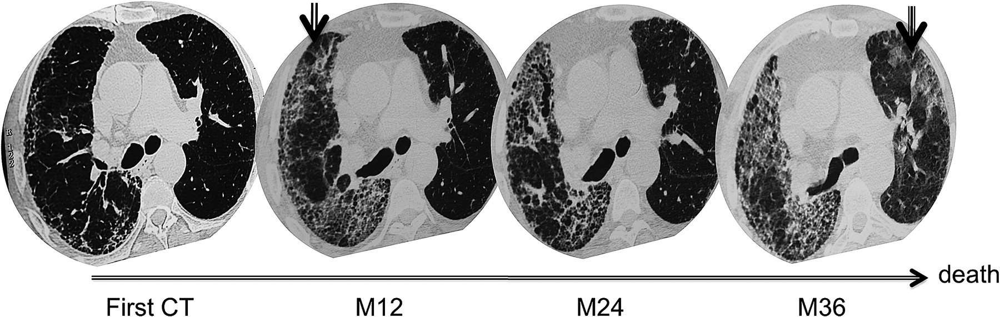
II. Sinh lý bệnh
– Cơ chế bệnh sinh: IPF được cho là liên quan đến tổn thương lặp lại của biểu mô phế nang và quá trình sửa chữa bất thường ở người có cơ địa nhạy cảm, dẫn đến hoạt hóa nguyên bào sợi và lắng đọng quá mức chất nền ngoại bào; bệnh không đơn thuần là viêm phế nang kéo dài.
– Đặc điểm mô bệnh học:
+ UIP có tính không đồng nhất về không gian và thời gian; các vùng xơ hóa thường xen kẽ với vùng nhu mô tương đối bảo tồn, ưu thế dưới màng phổi và cạnh vách.
+ Có thể thấy các ổ nguyên bào sợi (fibroblast foci) cạnh vùng xơ hóa giàu collagen.
+ Khi cấu trúc phổi bị tái cấu trúc nặng, có thể hình thành các khoang dạng tổ ong (honeycombing), thành xơ và thường được lót bởi biểu mô kiểu tiểu phế quản (bronchiolization). Mức độ tổn thương thay đổi giữa các vùng phổi.
III. Đặc điểm lâm sàng
– Triệu chứng và dấu hiệu:
+ Thường gặp khó thở tăng dần khi gắng sức và ho khan kéo dài.
+ Ran nổ mịn thì hít vào ở hai đáy phổi thường gặp; ngón tay dùi trống có thể xuất hiện nhưng không đặc hiệu.
+ Mệt mỏi và sụt cân có thể gặp, nhất là khi bệnh tiến triển; đau ngực và khó chịu là biểu hiện không đặc hiệu.
– Chức năng phổi:
+ Kết quả có thể còn bình thường ở giai đoạn nhẹ.
+ Thường có rối loạn thông khí hạn chế, với giảm dung tích sống gắng sức và tổng dung tích phổi. Thể tích cặn có thể tương đối được bảo tồn; khí phế thũng phối hợp có thể làm thay đổi kiểu rối loạn thông khí.
+ Khả năng khuếch tán carbon monoxide thường giảm, đôi khi từ giai đoạn sớm nhưng không đặc hiệu; giảm bão hòa oxy khi gắng sức có thể gặp.
– Yếu tố liên quan:
+ Hút thuốc có liên quan đến IPF nhưng không đặc hiệu. Tỷ lệ người bệnh có tiền sử hút thuốc được báo cáo khoảng 60% trong một số quần thể, thay đổi theo định nghĩa ca bệnh và không thể áp dụng đồng nhất cho mọi nhóm bệnh nhân.
+ Tiền sử gia đình mắc xơ phổi gợi ý yếu tố nhạy cảm di truyền; một số đoàn hệ đa trung tâm ghi nhận tiền sử này ở khoảng 20–25% bệnh nhân IPF, nhưng tỷ lệ thay đổi theo quần thể và cách xác định tiền sử gia đình.
+ Trào ngược dạ dày–thực quản có thể đồng mắc với IPF, nhưng chưa xác lập được đây là nguyên nhân hoặc yếu tố tiên lượng độc lập. Hướng dẫn ATS/ERS/JRS/ALAT năm 2022 khuyến nghị không dùng thuốc kháng acid hoặc phẫu thuật chống trào ngược chỉ với mục tiêu điều trị IPF.
IV. Tiểu thùy phổi thứ cấp
– Tiểu thùy phổi thứ cấp (Secondary pulmonary lobule – SPL) là đơn vị cấu trúc nhỏ nhất của phổi được bao quanh bởi vách mô liên kết.
– Ở phổi người có khoảng 5000 tiểu thùy thứ cấp Miller.
– Hình tháp đa diện, đáy ở ngoại vi, đỉnh hướng về rốn phổi.
– Nó hình thành từ 3-15 chùm phế nang và có đường kính đáy 1-2,5cm.
– Trục của tiểu thùy thứ cấp được tạo thành bởi tiểu phế quản trung tâm tiểu thùy (central bronchiole) và tiểu động mạch trung tâm tiểu thùy (central arteriole).
– Tĩnh mạch và mạch bạch huyết nằm ở ngoại vi của tiểu thùy thứ cấp và nằm trong vách gian tiểu thùy.
– Có 2 hệ bạch huyết:
+ Hệ trung tâm: đi cùng nhánh mạch phế quản và phế quản vào trung tâm tiểu thùy.
+ Hệ ngoại vi: nằm ở vách gian tiểu thùy và dọc theo đường màng phổi.

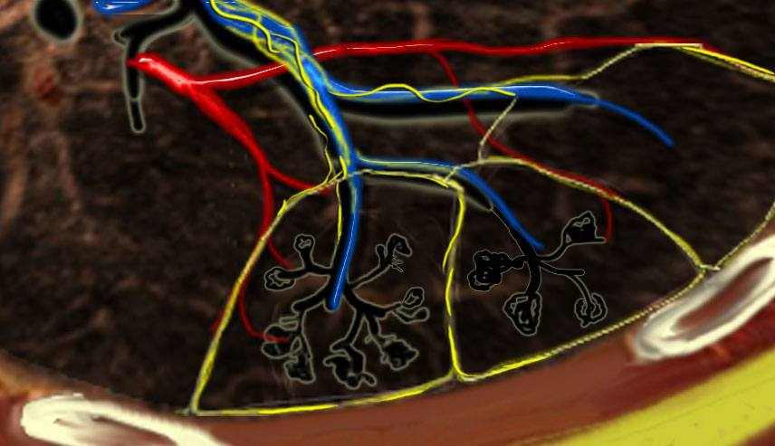
* Vách gian tiểu thùy
– Vỏ bọc của tiểu thùy phổi thứ cấp, chứa tĩnh mạch phổi và hệ bạch huyết.
– Là vị trí tổn thương hệ bạch huyết ngoại vi: Sarcoid, di căn, phù phổi.
– Nhánh tĩnh mạch phổi: thấy cách bề mặt màng phổi khoảng 1-2cm, cách động mạch trung tâm tiểu thùy 5-10mm.
– Bình thường có thể thấy ở vùng đỉnh trước, dọc theo bờ của màng phổi trung thất
* Trung tâm tiểu thùy
– Là vị trí tổn thương của các bệnh mà đường xâm nhập là đường thở:
+ Viêm phổi quá mẫn.
+ Viêm tiểu phế quản hô hấp.
+ Khí phế thũng trung tâm tiểu thùy.
– Tiểu động mạch: thấy được cách bề mặt màng phổi khoảng 5-10mm, hình chữ Y
– Tiểu phế quản hô hấp: thấy được cách bề mặt màng phổi 30mm
– Tổ chức kẽ quanh phế huyết quản: bình thường không thấy được

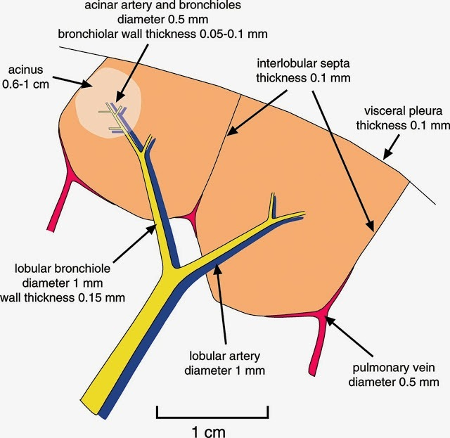
* Chùm phế nang
– Là cấu trúc tận của tiểu phế quản, kích thước khoảng 7mm, mỗi chùm phế nang có khoảng 400 phế nang, bình thường không thấy

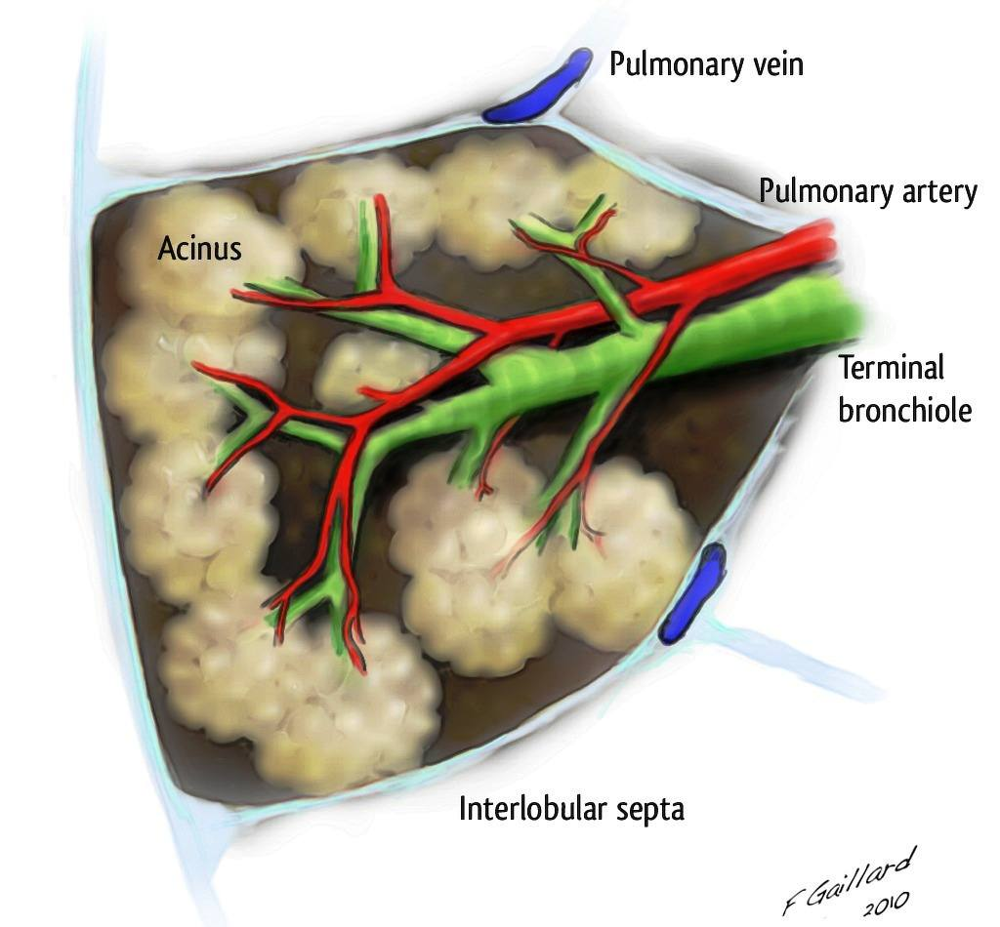
© Chẩn Đoán Hình Ảnh Xray.vn
V. Chẩn đoán x-quang
– X-quang phổi thường có thể bình thường
– Có thể thấy hình ảnh lưới, nốt hoặc lưới – nốt kết hợp phân bố ngoại vi dưới màng phổi
– Tổn thương phân bố vùng nền phổi và phía các phân thùy phía sau
– Có thể kèm giãn phế nang, giãn phế quản
– Giảm thể tích phổi, thay đối kiến trúc phổi


VI. Chẩn đoán CLVT
1. Tổn thương dạng lưới


– Do dịch kẽ, thâm nhiễm tế bào, xơ hóa => gây ra tổn tương dạng lưới do dày vách liên tiểu thùy.
– Tổn thương dạng đường, chiều dài 10-20 mm

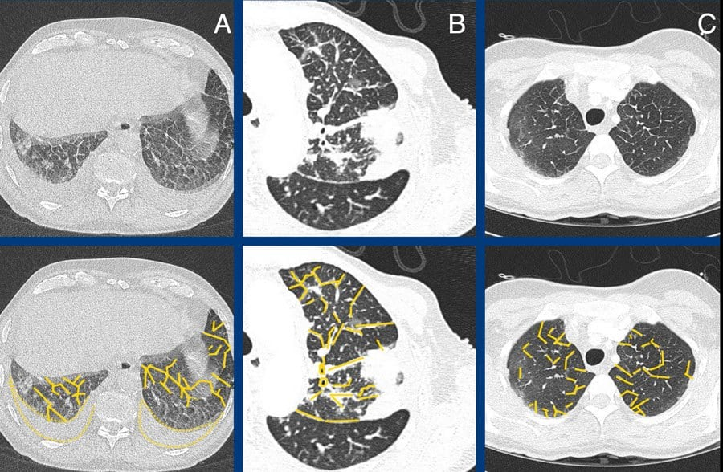
* Phân loại:
– Dày vách liên tiểu thùy thể nhẵn / dày đều
+ Phù phổi cấp
+ Chảy máu phổi
+ U di căn đường bạch mạch
+ Nhiễm bột (amyloidosis), lắng đọng protein phế nang
+ Viêm phổi
– Dày vách liên tiểu thùy thể nốt
+ U di căn đường bạch mạch
+ U hạt (Sarcoidosis), bệnh bụi phổi silic (Silicosis), nhiễm bột
+ Bệnh phổi có tăng sinh bạch cầu lympho (viêm phổi kẽ tăng sinh bạch cầu lympho)
– Dày vách liên tiểu thùy thể hỗn hợp
+ Giai đoạn cuối của các bệnh phổi
+ Viêm phổi kẽ
+ U hạt (Sarcoidosis), bệnh bụi phổi amiang (Asbestosis)
+ Viêm phổi quá mẫn


2. Tổn thương tổ ong
– Sự hiện diện của các khoang dạng nang nhỏ được lót bởi biểu mô tiểu phế quản với thành dày có bản chất là mô xơ. Hậu quả của xơ hóa và biến dạng các cấu trúc của tiểu thùy phổi thứ cấp.
– Là dấu hiệu điển hình của viêm phổi mô kẽ thông thường.
– Định nghĩa của Hiệp hội Fleischner là “các khoảng không khí dạng nang tập trung, thường có đường kính tương đương khoảng 3–10 mm nhưng đôi khi lớn tới 2,5 cm. Tổ ong thường ở dưới màng phổi và được đặc trưng bởi thành được xác định rõ.

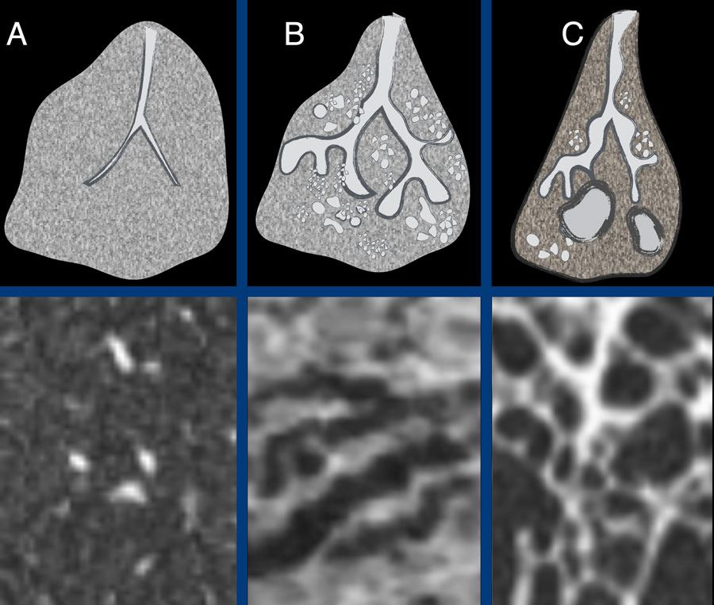
– Trên CT hình ảnh tổ ong được xác định là những khoảng chứa khí từ 3-10mm ở dưới màng phổi.
– Hình ảnh tổ ong có thể gặp ở cả giai đoạn cuối của sarcodoisis, NSIP, viêm phổi quá mẫn.


3. Tổn thương kính mờ
– Khoang phế nang bị lấp đầy mủ, dịch phù, chảy máu, viêm hoặc tế bào u hay dày khoảng kẽ hoặc thành phế nang => biểu hiện của bệnh lý phế nang hoặc bệnh lý phổi kẽ.
– Hình thái tổn thương:
+ Cấp tính: phù phổi, suy tim, chảy máu phổi, viêm phổi, viêm phổi tăng Eosinophil cấp
+ Mạn tính: viêm phổi mô kẽ do quá mẫn, viêm phổi tổ chức hóa, viêm phổi tăng bạch cầu ái toan mạn tính, viêm phổi mô kẽ, lắng đọng protein phế nang, ung thư biểu mô phế quản phế nang.
– Vị trí:
+ Ưu thế phía trên: viêm tiểu phế quản hô hấp, viêm phổi do Pneumocystic carinii
+ Ưu thế phía dưới: viêm phổi mô kẽ, xơ hóa phổi (UIP, NSIP)
+ Phân bố trung tâm tiểu thùy: viêm tiểu phế quản, viêm phổi quá mẫn
– Đặc điểm hình ảnh:
+ Hình mờ mơ hồ, có phế quản và mạch máu bên dưới.
+ Bờ viền mờ
+ Có thể có kèm theo cấu trúc tổ chức đặc (u phổi)
+ Khí trong nhánh phế quản “đen hơn” khí trong phế nang xung quanh => Dấu hiệu “Dark bronchus”
+ Tổn thương kèm theo: hình mờ dạng lưới, hình mờ trung tâm tiểu thùy, hình mờ do xơ hóa

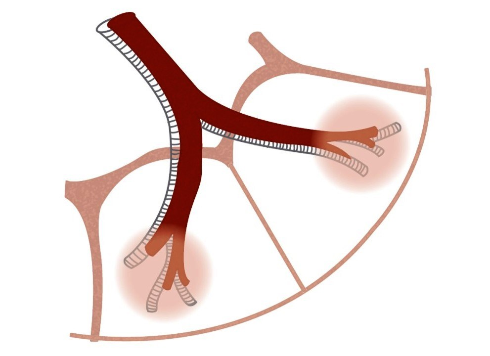
=> Case lâm sàng:

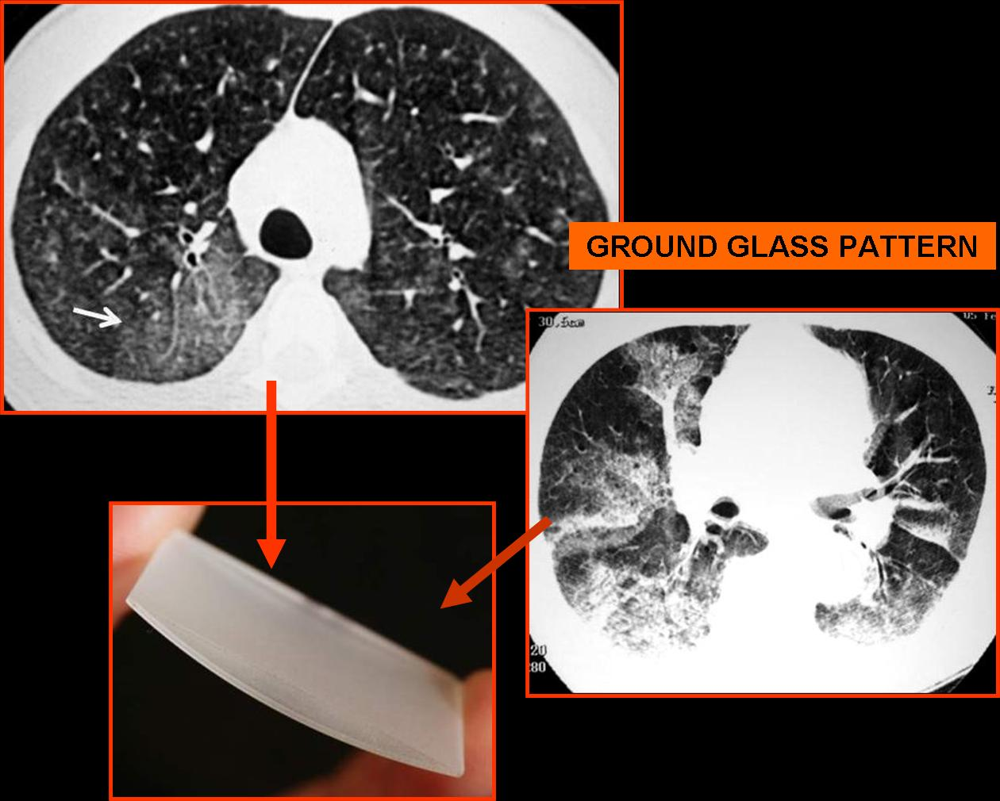

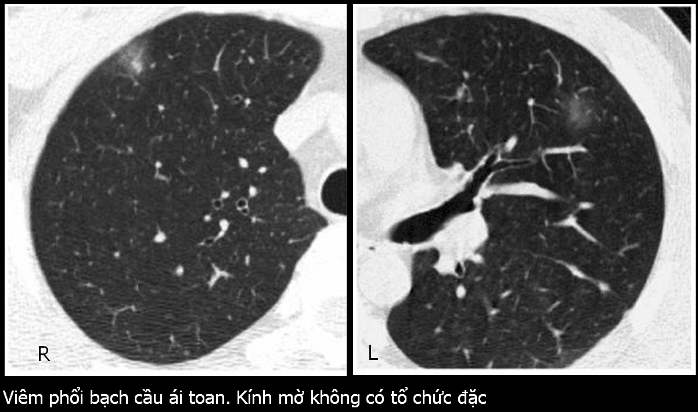

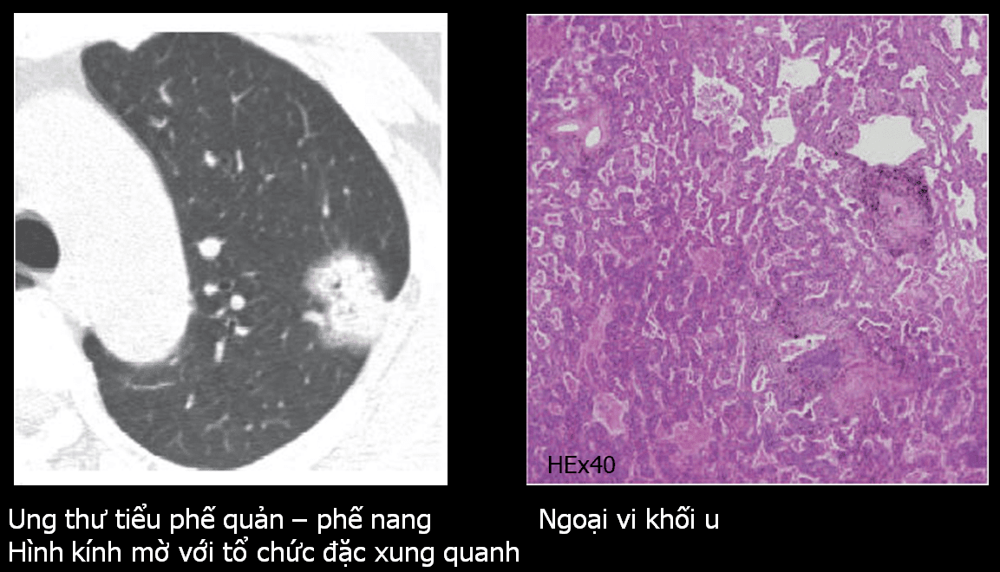

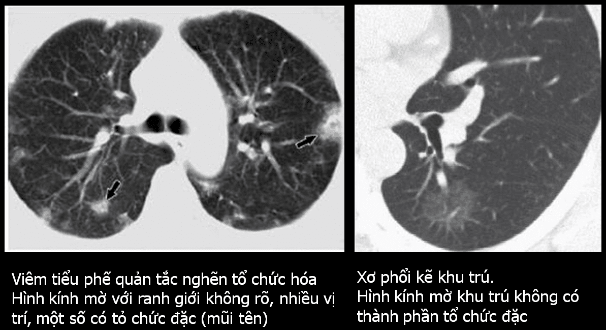

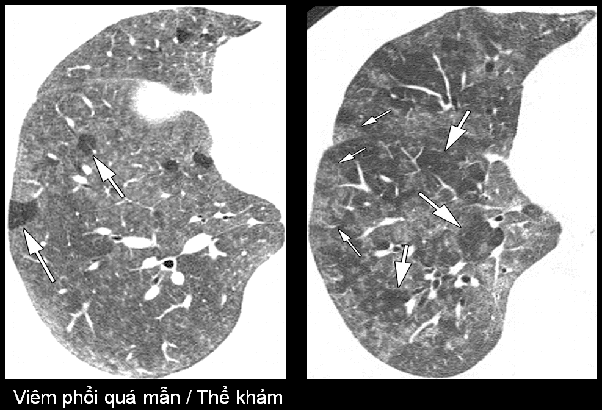

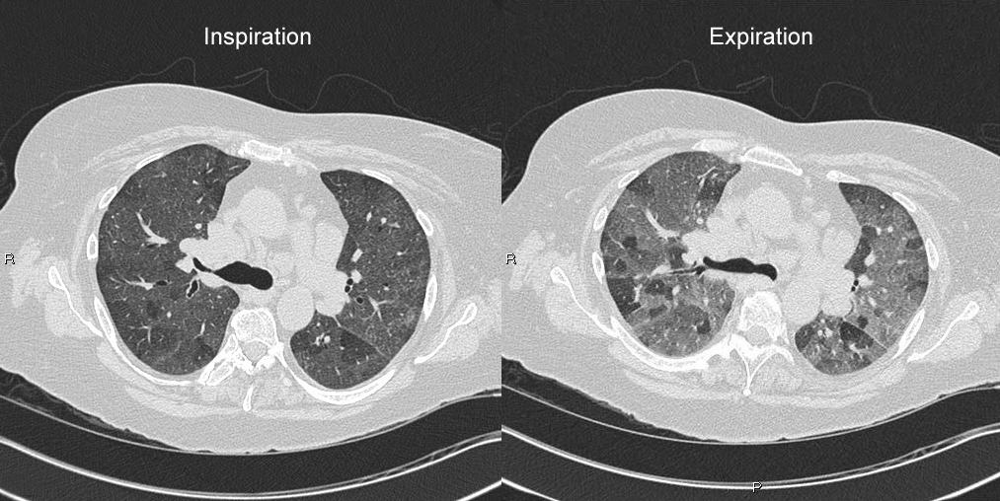

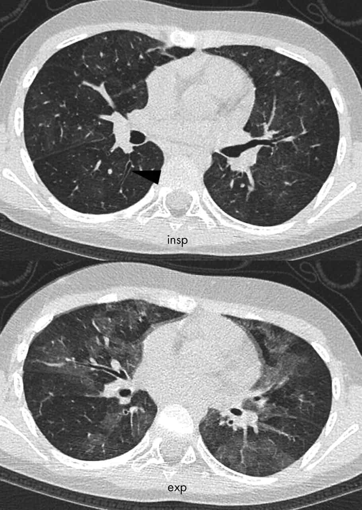

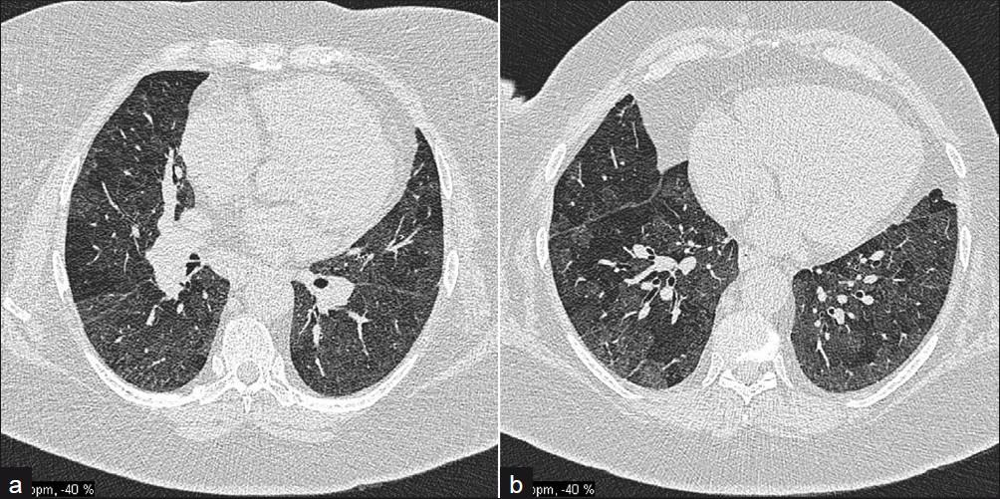
4. Viêm phổi kẽ thông thường
* Đặc điểm hình ảnh
– Trong UIP giai đoạn đầu, X quang ngực có thể bình thường, trong khi ở bệnh tiến triển, thể tích phổi giảm và các đám mờ dạng lưới dưới màng phổi tăng từ đỉnh phổi đến đáy phổi.


– CT tốt hơn chụp X quang trong việc mô tả các dấu hiệu điển hình của UIP.
– Tổn thương xơ hoá phân bố ở ngoại vi 2 phổi, dưới màng phổi, nổi bật ở 2 nền phổi, không quanh mạch máu phế quản. UIP thường xảy ra ở ngoại vi và thường liên quan đến đáy phổi, mặc dù một số mức độ liên quan đến thùy trên là điển hình. Đôi khi, UIP có thể chiếm ưu thế ở thùy trên, mặc dù phát hiện này luôn gợi ý khả năng có các chẩn đoán thay thế. Tuy nhiên, sự phân bố xơ hóa không ở ngoại vi rất không điển hình vì hơn 90% trường hợp UIP là xơ hóa ngoại biên chiếm ưu thế.
– Hình ảnh tổn thương dạng lưới kết hợp giãn phế quản do co kéo (traction bronchiectasis), kết hợp tổn thương dạng tổ ong. Tổ ong là chẩn đoán xơ hóa giai đoạn cuối và thường biểu hiện trên CT dưới dạng “các khoảng khí dạng nang tập trung, thường có đường kính tương đương khoảng 3–10 mm; tổ ong phát sinh ở các phần ngoại vi nhất của phổi. Tổ ong có tính gợi ý cao về UIP trên hình ảnh và xuất hiện ở hầu hết bệnh nhân mắc UIP.
– Tổn thương dạng kính mờ, không có tổn thương đông đặc. Mức độ mờ kính mờ đáng kể là không bình thường ở UIP ngoại trừ ở những bệnh nhân bị nhiễm trùng bội nhiễm, đợt cấp tính trầm trọng hoặc phù phổi. Nếu kính mờ xảy ra ở vùng phổi không xơ hóa thì nên xem xét tình trạng trầm trọng cấp tính, nhiễm trùng chồng chất hoặc hít sặc. Nếu tình cờ phát hiện một vùng đông đặc khu trú hoặc tổn thương dạng nốt trong vùng xơ hóa phổi thì cần phải theo dõi chặt chẽ vì xơ hóa phổi là yếu tố nguy cơ đáng kể cho sự phát triển của ung thư phổi, thường là ung thư biểu mô tế bào vảy hoặc ung thư biểu mô tuyến.


– Xơ hóa gây co kéo xung quanh dẫn đến
+ Giảm thể tích phổi: thường thùy dưới, gặp trong giai đoạn nặng
+ Biến dạng kiến trúc phổi
+ Bề mặt mịn giữa khí – mô kẽ bình thường mất đi.

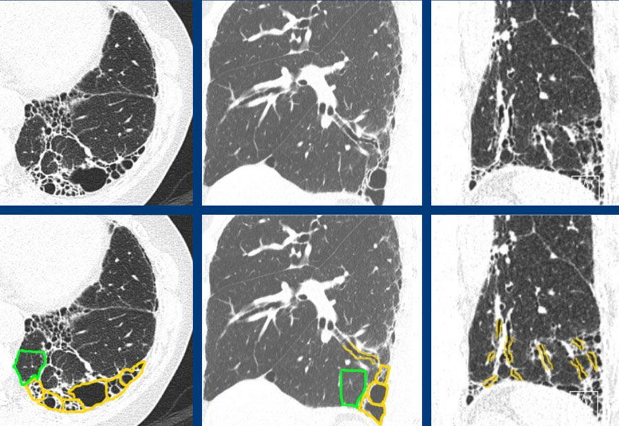
=> Case lâm sàng 1:


* Kiểu hình viêm phổi kẽ thông thường
– Kiểu hình UIP xác định (Definite UIP pattern)
+ Xơ hóa ưu thế ở nền và dưới màng phổi
+ Không có đặc điểm không phù hợp với UIP trên CT
+ Thường phân bố không đồng nhất
+ Xuất hiện dạng tổ ong.
+ Ngoài những bệnh nhân mắc IPF, mẫu CT UIP xác định có thể được tìm thấy ở những bệnh nhân mắc bệnh mạch máu collagen, bệnh phổi nghề nghiệp, xơ phổi gia đình, viêm phổi quá mẫn (HP) hoặc xơ phổi liên quan đến thuốc.


=> Case lâm sàng 1:


– Kiểu hình khả năng là UIP (Probable UIP pattern)
+ Xơ hóa ưu thế ở nền và dưới màng phổi với tổn thương dạng lưới và giãn phế quản
+ Không có đặc điểm không phù hợp với UIP trên CT
+ Thường phân bố không đồng nhất
+ Không có kiểu hình tổ ong.


=> Case lâm sàng 1:


– Kiểu hình không rõ UIP (Indeterminate UIP pattern)
+ Xơ hóa ưu thế ở nền và dưới màng phổi
+ Không có đặc điểm không phù hợp với UIP trên CT
+ Kiểu hình lưới khó thấy với kính mờ nhẹ
+ Đặc điểm CT không phân loại được.
+ Phân loại “không phù hợp với UIP” ngụ ý rằng nên xem xét chẩn đoán thay thế cho UIP trên cơ sở sự hiện diện của một hoặc nhiều dấu hiệu CT sau: ưu thế trên hoặc giữa phổi, ưu thế quanh mạch máu quanh phế quản, mờ kính mờ rộng hơn là dạng lưới, nhiều nốt nhỏ, nhiều nang rời rạc không giống với tổ ong, tổn thương dạng khảm lan tỏa hoặc bẫy khí liên quan đến 3 phân thùy trở lên và cả hai bên và tổn thương đông đặc.


=> Case lâm sàng 1:


– Gợi ý chẩn đoán khác (Alternative diagnosis)
+ Nhưng khi tổn thương ưu thế ở vùng trên và giữa 2 phổi, phân bố quanh phế quản mạch máu, có tổn thương dạng kính mờ, tổn thương đông đặc (ngoài phần tổn thương dạng lưới) hoặc tổn thương dạng nốt nhỏ lan tỏa, hình ảnh đa kén (cyst) rời rạc ở 2 phổi hay có hình ảnh tổn thương dạng khảm hoặc hiện tượng bẫy khí cần tìm các nguyên nhân khác không phải xơ phổi vô căn.


+ Đặc điểm CT gợi ý bệnh lý khác: Amiang (vôi hóa màng phổi dạng mảng màng phổi), viêm khớp dạng thấp (đau khớp, ăn mòn khớp)…

5. Mẫu kiểu hình UIP
* Không phân bố dưới màng phổi – phân bố quanh phế quản
– Viêm phổi quá mẫn (Hypersensitivity pneumonitis)
+ Đặc trưng là xơ hóa quanh phế quản, với kính mờ thay đổi, tỷ trọng dạng khảm.
+ Bẫy khí do tắc nghẽn đường thở nhỏ.
+ Có thể thấy nốt kính mờ trung tâm tiểu thùy ở giai đoạn bán cấp (không xơ hóa) của bệnh.
+ Xơ hóa có thể phân bố ngẫu nhiên hoặc lan tỏa ở vùng giữa và trên phổi.

– U hạt (Sarcoidosis)
+ Xơ hóa điển hình ở quanh phế quản mao mạch ở vùng giữa, trên với biến dạng các cấu trúc và giãn phế quản co kéo trung tâm, kiểu hình lưới thay đổi và thậm chí kiểu hình tổ ong.
+ Giai đoạn sớm điển hình là hạch bệnh lý ở hai bên rốn phổi và trung thất. Giai đoạn muộn hạch thường có kích thước bình thường và thường có vôi hóa.

* Kiểu hình kính mờ và đông đặc
– Viêm phổi kẽ không đặc hiệu (nonspecific interstinal pneumonia – NSIP): kiểu hình xơ phổi NSIP điển hình trong bệnh Sjögren, với xơ hóa thay đổi và kính mờ ở nền phổi kéo dài về trung tâm.


=> Case lâm sàng 1:


– Viêm khớp dạng thấp (RA – Rheumatoid Arthritis)
+ Gây xơ hóa trầm trọng dưới màng phổi, đáy phổi với kiểu hình tổ ong lan tỏa, phù hợp với viêm phổi kẽ thông thường do viêm khớp dạng thấp.
+ RA gây tổn thương nhiều thành phần, bao gồm đường dẫn khí, màng phổi, mô kẽ phổi với điển hình là kiểu hình UIP.

– Bệnh phổi kẽ liên quan với hút thuốc
+ Điển hình cho thấy khí phế thũng với những bất thường xơ hóa nhẹ ở vùng đỉnh hoặc lan tỏa và ít
gây giảm thể tích nặng ở đáy phổi hơn so với UIP.
+ Tuy nhiên, những biến đổi do hút thuốc thường chồng lấp với bệnh lý phổi kẽ khác do bệnh nhân có tiền sử hút thuốc.
+ Người hút thuốc ít khi bị viêm phổi quá mẫn mạn tính, trong khi lại có nguy cơ mắc UIP/IPF.
– Bệnh phổi kẽ do thuốc
+ Bệnh phổi kẽ liên quan đến thuốc khó phân nhóm, không có đặc điểm điển hình.
+ Nó thường nằm trong danh sách chẩn đoán phân biệt, đặc biệt khi kiểu hình không phải UIP.
+ Điển hình nó có dạng kính mờ ưu thế và/hoặc kiểu hình đông đặc viêm phổi tổ chức hóa, hơn là dạng xơ hóa.
+ Methotrexate, Amiodarone và Nitrofurantoin được biết đến là các thuốc gây độc cho phổi. Việc sử dụng
ngày càng nhiều liệu pháp miễn dịch khiến do bệnh phổi kẽ do thuốc ngày càng phổ biến hơn.


Tài liệu tham khảo
* Pulmonary Fibrosis A stepwise approach to fibrosis on HRCT – Onno Mets, Lilian Meijboom and Robin Smithuis
* CT signs to differentiate Idiopathic Pulmonary Fibrosis and Connective Tissue Disorders related Usual Interstital Pneumonia – A. AGGARWAL
* How can we differentiate connective tissue disease–associated interstitial lung disease from idiopathic pulmonary fibrosis based on CT findings – K. Boudawara
* Interstitial Pulmonary Fibrosis: How to classify honeycombing/reticular abnormalities without basal predominance in absence of features of inconsistent UIP following ATS 2011 guidelines? – G. Sergiacomi
* 2018 Classification of Idiopathic Pulmonary Fibrosis: impact on diagnostic workflow – A. Ottavianelli
* A better understanding of the HRCT features of Idiopathic Pulmonary Fibrosis using micro-computed tomography – C. Mai, J. A. Verschakelen, S. Willems, S. Verleden, B. Vanaudenaerde, E. Verbeken, W. Wuyts; Leuven/BE
* Imaging features of Idiopathic Pulmonary Fibrosis: A pictorial review – P. Leitão
* Imaging in Idiopathic Pulmonary Fibrosis (IPF) – Review of the Revised International Guidelines and Implications on Management – V. Halai, L. Chen, A. Leandru, A. Wallis; Portsmouth/UK
* Idiopathic pulmonary fibrosis, when things go south: HRCT findings – M. Scutti
* MDCT of patients with advanced stage of Idiopathic Pulmonary Fibrosis – R. Rubtsov
* Idiopathic Pulmonary fibrosis: pictorical review of Fleishner society revised criteria – T. D. Melo
* Idiopathic pulmonary fibrosis (IPF): Semiological findings, differential diagnosis and multidisciplinary approach – C. Botía González
* High-resolution CT of complications of idiopathic fibrotic lung disease – C R Lloyd
* Practical Imaging Interpretation in Patients Suspected of Having Idiopathic Pulmonary Fibrosis: Official Recommendations from the Radiology Working Group of the Pulmonary Fibrosis Foundation – Stephen Hobbs
* Diagnosis of Idiopathic Pulmonary Fibrosis An Official ATS/ERS/JRS/ALAT Clinical Practice Guideline – Ganesh Raghu, Martine Remy-Jardin, Jeffrey L. Myers
* Fibrosing Interstitial Lung Disease A Practical High-Resolution Computed Tomography–based Approach to Diagnosis and Management and a Review of the Literature – Philip A. Hodnett
* The Value of a Multidisciplinary Approach to the Diagnosis of Usual Interstitial Pneumonitis and Idiopathic Pulmonary Fibrosis: Radiology, Pathology, and Clinical Correlation – Jonathan H. Chung and David A. Lynch
* CT in Idiopathic Pulmonary Fibrosis: Diagnosis and Beyond – James F. Gruden